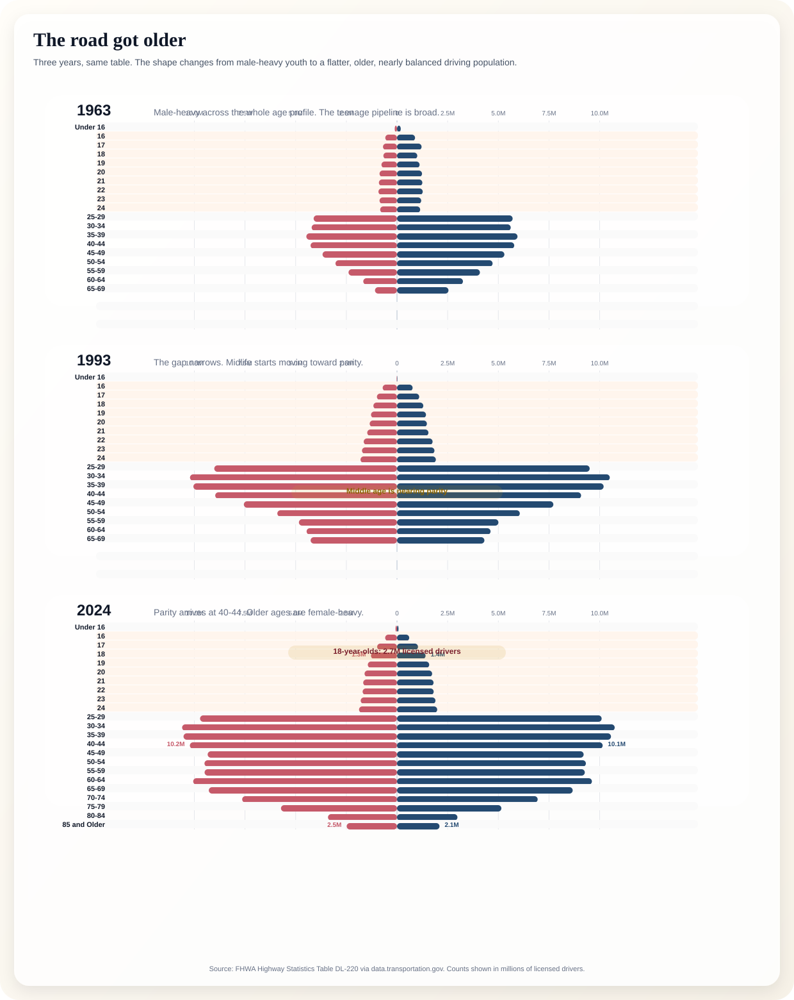
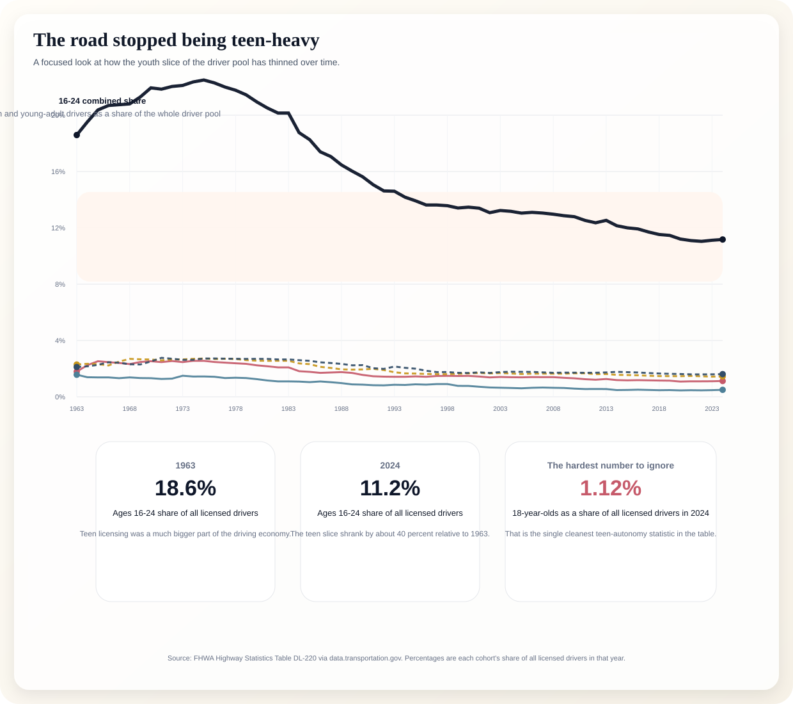
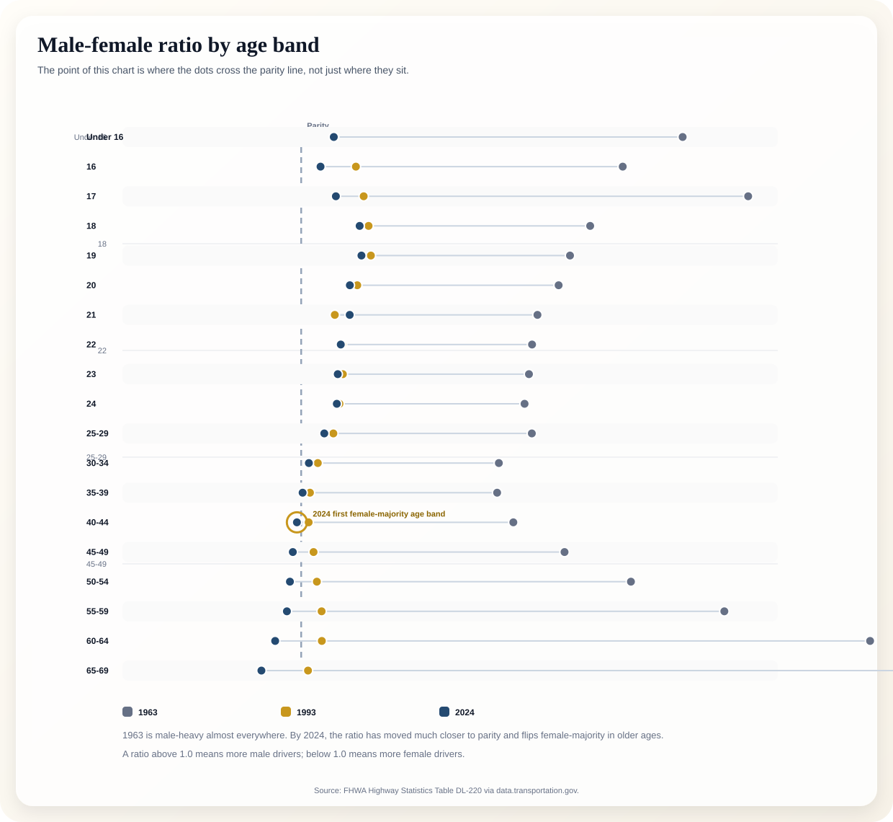

Use this as the lead graphic. It instantly shows where male and female counts are balanced, where younger cohorts still lean male, and how female advantage emerges in older ages.

Run the 16, 18, 21, and 25-29 lines together to show that teen and young-adult licensing is becoming a smaller slice of the driver pool. Keep age 18 in the accent color.

Use this to dramatize the gender gap collapse. In 1963 the gap was male-heavy across most ages; by 2024 parity shows up much earlier and older cohorts go female-majority.
